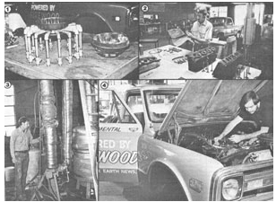
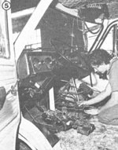

As lots of folks who are interested in alternative forms of transportation probably already know, a coast-to-coast "Future Fuels Rally"-sponsored by Shepard Electronics, Inc. of Rochester, New York-was slated to be held early in September of this year. This event (which was recently postponed, but nonetheless should be completed by the time this issue is published) is important because it gives just about anyone with time and determination the opportunity to use his or her ingenuity to develop a vehicle that operates (for, it's hoped, more than 3,000 miles) on a source of energy other than petroleum!
Furthermore, the rally offers-as an incentive to such creative folks-a total of $300,000 in prize money (upped by interested parties, during the weeks prior to the event, from the $25,000 the Shepard firm had originally donated for the purse), which ought to help assure that some pretty workable, and interesting, entries will be queuing up at the starting line.
At the time of this writing, eight classes have been announced. They include vehicles using methanol, ethanol, wood, hydrogen, electric propulsion, altered diesel systems, and hybrid drives . . . plus a final category covering those vehicles that have been labeled as miscellaneous.
And, as we announced in the last issue of MOTHER, our research crew intends to enter MOM's woodburning truck in the event. In addition, we've done some fine-tuning on our ethanol-powered van to ready it for the journey.
To date, we've been working steadily to further improve the gasification system detailed on page 164 of MOTHER NO. 71, and now-with the addition of a heat-resistant stainless steel liner around the hearth zone, a thermally protected and interchangeable hearth insert, a water-jacketed gasifier and condenser, and a heavy-duty filtering system-we feel that the woodburner is fully capable of racking up the miles between California and New York without a hitch .. . at a fuel cost of absolutely zero, since all our wood is scrap!
At any rate, we're looking forward to participating in an event which should provide a showcase for all the ideas that the backyard mechanics and tinkerers in this country have come up with in the face of the energy crisis. And win, lose, or draw . . . a number of those designs ought to go a long way toward convincing the skeptics among us that fuel alternatives might not be impractical at all!
|
 |
 |
|